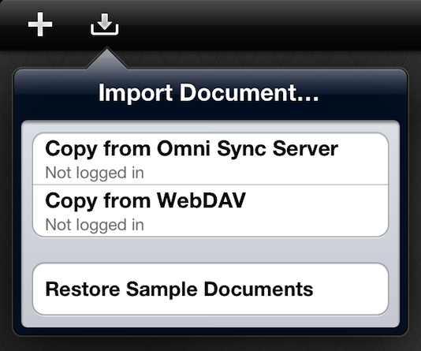

Importing Graphs

Use the import button in the document browser toolbar to copy GraphSketcher for iPad documents from your Omni Sync Server account or a WebDAV server. To copy from Omni Sync Server or WebDAV, enter your username and password (and server name in the case of WebDAV), then select the files you'd like to copy.